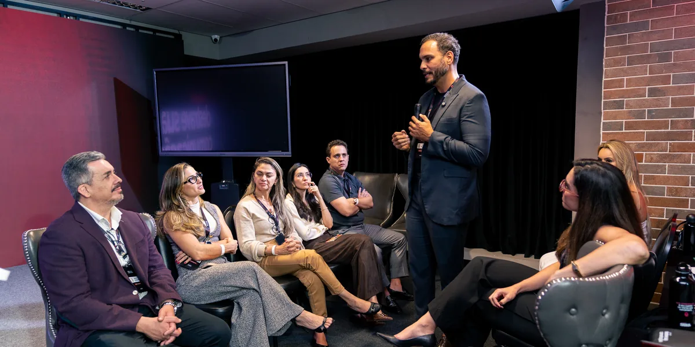
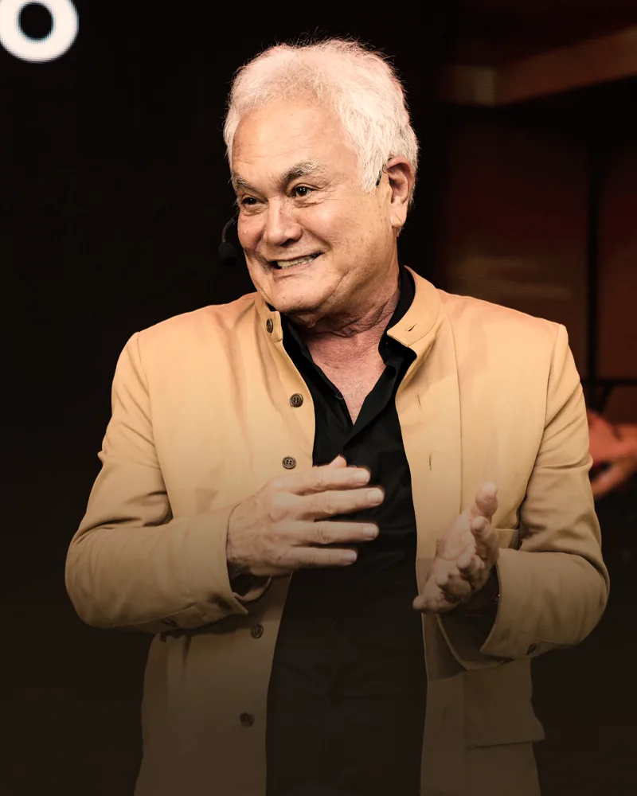

- 1 Descubra a sua trava
- 2 Aprenda a técnica
- 3 Treine no palco
A sua trava tem nome e não é “falta de jeito”.
Quem trava na hora de falar quase sempre esbarra em uma destas três coisas. Veja em qual você se encaixa.
-
Trava 1 · Insegurança
O branco na hora H
Você preparou tudo, sabe o assunto — mas quando os olhos viram pra você, o coração dispara e a ideia some.
- Ensaia sozinho e trava na frente dos outros
- Deixa passar a vez pra não se expor
- Sai da reunião pensando “eu queria ter falado”
-
Trava 2 · Falta de técnica
Ninguém te ensinou
Falar em público é técnica — respiração, estrutura, ritmo, uso do corpo. E isso não se aprende no improviso.
- Você fala, mas se enrola e perde o fio
- Não sabe como começar nem como fechar
- A mensagem boa se perde no caminho
-
Trava 3 · Autoimagem e voz
“Eu sou travado assim”
Você se convenceu de que é tímido por natureza, não gosta da própria voz e evita a câmera a todo custo.
- Grava, se assiste, apaga e desiste
- Acha que autoridade é coisa “dos outros”
- Se cala — e vê o colega que fala melhor crescer
Nenhuma dessas é um defeito de nascença. É uma trava com causa — e com um caminho pra destravar.
O que você sai sabendo fazer
Você entra travado. Sai com repertório.
Você não sai daqui motivado. Sai sabendo o que fazer na próxima conversa, aula ou reunião.
-
Falar bem em 1 minuto
O pitch de elevador: dizer quem você é e o que faz de um jeito que prende, em 60 segundos.
-
Estruturar qualquer fala
Um esqueleto que serve pra palestra, aula, reunião ou vídeo — começo, meio e fim, sem se perder.
-
Dar feedback assertivo
Ler o perfil comportamental de quem está na frente e adaptar a mensagem pra ser ouvido de verdade.
-
Ter mais autoridade no que fala
Postura, voz e presença que fazem as pessoas pararem pra escutar — sem você forçar a barra.
-
Se comunicar melhor com equipe e família
Porque destravar a voz não muda só o trabalho. Muda a mesa de casa, o casamento, a relação com os filhos.

Como funciona o método
3 dias, uma engrenagem.
Diagnosticar a trava, aprender a técnica e treinar sob pressão real — até a evolução ficar visível na tela.
-
01
Diagnóstico da sua trava
O evento começa com um momento de reflexão: onde exatamente você trava, por quê — e a definição das metas que você vai perseguir nos 3 dias. Sem diagnóstico, não há treino certo.

-
02
O Tripé da Comunicação
Toda comunicação que convence se apoia em três pilares treináveis. Você trabalha os três, um a um.
-
Voz
Respiração, projeção, ritmo e pausas
-
Corpo
Postura, presença e gesto que sustentam a fala
-
Mente
Controle da trava, foco e clareza sob pressão
-
-
03
Prática real
Treino sob pressão: 3 gravações progressivas
Você grava a si mesmo falando — em grupo, com o tempo aumentando a cada rodada. É aqui que a técnica sai do papel e vira reflexo.
3 5 7 minutos

-
04
Autoavaliação e evolução visível
Entre uma gravação e outra, você se assiste e se avalia. A diferença do vídeo de 3 minutos pro de 7 é o momento em que a ficha cai: não era dom, era treino.
-
05
Método P.A.M.
A estrutura para construir Posicionamento, Autoridade e Método no que você fala — pra que a sua mensagem seja levada a sério dentro e fora do palco.
-
06
Hora do show
Sua apresentação real no palco
10 minutos no palco, com microfone e cronômetro rodando. A prova final de que a sua comunicação mudou — vivida na frente da plateia, não imaginada.

-
07
A camada emocional
O Hot Seat da família e o momento de reflexão de domingo tratam o que trava por baixo da técnica. Porque a voz que você engole no trabalho costuma ser a mesma que você engole em casa.

Um fim de semana. Vários mestres da comunicação.
Cada bloco é conduzido por quem domina uma peça específica da comunicação — da técnica vocal à neurociência da trava.
-
Criador do método
Comunicação estratégica
Rogério Magalhães
Mestre em Comunicação Estratégica e criador do método Destrave. Com 16 anos de experiência, ajuda pessoas tímidas a se tornarem comunicadores magnéticos. Já impactou milhares de vidas com uma abordagem prática e transformadora.
-

Liderança e oratória
Roberto Shinyashiki
Escritor best seller, psiquiatra e palestrante brasileiro, conhecido por suas obras sobre sucesso e comportamento humano. Ele se destaca por abordar temas como comunicação, liderança e oratória de forma clara e motivadora.
-
Comunicação corporativa
Amanda Ribeiro
Jornalista e sócia-diretora da RMA Educação, é especialista em liderança e comunicação corporativa. Atua transformando empresas por meio da comunicação com propósito, presença e verdade.
Depoimentos
Todos aqui travavam como você. Nenhum fala hoje como falava na chegada.
Cada um chegou com uma trava diferente. Nestes vídeos, eles contam o que mudou.
-
Participante do Destrave
-
Paulo Colombo
Ginecologista
-
Matheus
Arquiteto
-
Dra. Patrícia Sanches
Médica
-
Participante do Destrave
O investimento
Destrave Sua Comunicação
Tudo o que está incluído
- 3 dias de imersão presencial (20+ horas) com o método completo
- O Tripé da Comunicação: voz, corpo e mente, treinados na prática
- 3 gravações progressivas (3, 5 e 7 min) mais autoavaliação guiada
- Hora do Show: sua apresentação real de 10 min no palco
- Método P.A.M. de posicionamento e autoridade
- Aulas com todos os especialistas, mais Roberto Shinyashiki e Rogério Magalhães
- Apostila, crachá e caneta, coffee break nos 3 dias e certificado
Vagas limitadas
Investimento
R$ Valor liberado no contato com a equipe.
O valor com desconto é liberado no contato com a nossa equipe.
Você preenche, e a nossa equipe chama no WhatsApp para confirmar a vaga.
Antes de decidir
Dúvidas frequentes
Terei certificado?
Sim, é realizada a entrega do certificado online após o curso.
Terei um kit do aluno?
Sim. Apostila, crachá e caneta.
Onde será o evento?
O evento acontece em São Paulo, SP.
Quais são os dias e os horários do evento?
Dias 4, 5 e 6 de setembro de 2026, com mais de 20 horas de imersão ao longo dos três dias.
A formação é presencial?
Sim, os 3 dias são presenciais.
É oferecido coffee break?
Sim, o coffee break está incluso nos 3 dias do curso.